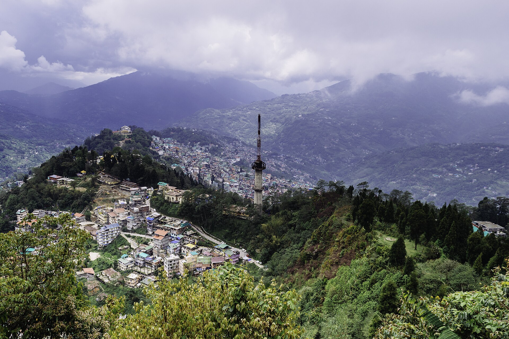
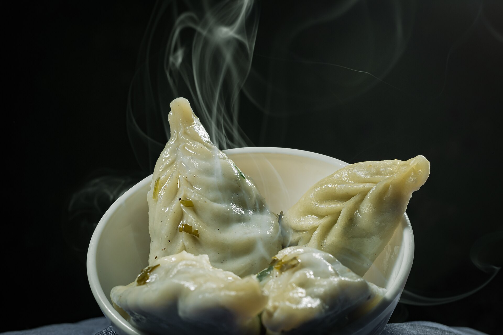

Gangtok is the kind of hill town that makes you want to slow down. The streets are spotless, MG Marg is free of traffic, and on a clear day Kanchenjunga looks close enough to touch from the town's viewpoints.
Start at Rumtek Monastery, about an hour from town, where the morning prayers fill the courtyard with chanting and the scent of juniper. Back in Gangtok, visit Enchey Monastery and Do Drul Chorten, then catch the sunset from Ganesh Tok.

An early drive climbs to Tsomgo Lake at 12,300 feet. In winter it freezes solid; in spring the slopes around it bloom with rhododendrons. Indian travellers can continue to Nathu La on the old Silk Route border with Tibet.

Spend your evenings on MG Marg. Try steamed and fried momos, a bowl of thukpa, sel roti and a glass of local tongba. The bakeries here are also excellent for a slice of cake with your coffee.

Two days is just a taste - Gangtok is also the gateway to Lachen, Lachung and the high lakes of North Sikkim. Ask us to combine them into one seamless journey.

Loved Gangtok? Book our Gangtok trip with day-by-day plan and price, or tell us your dates and budget for a custom itinerary – stays, drivers and permits included.